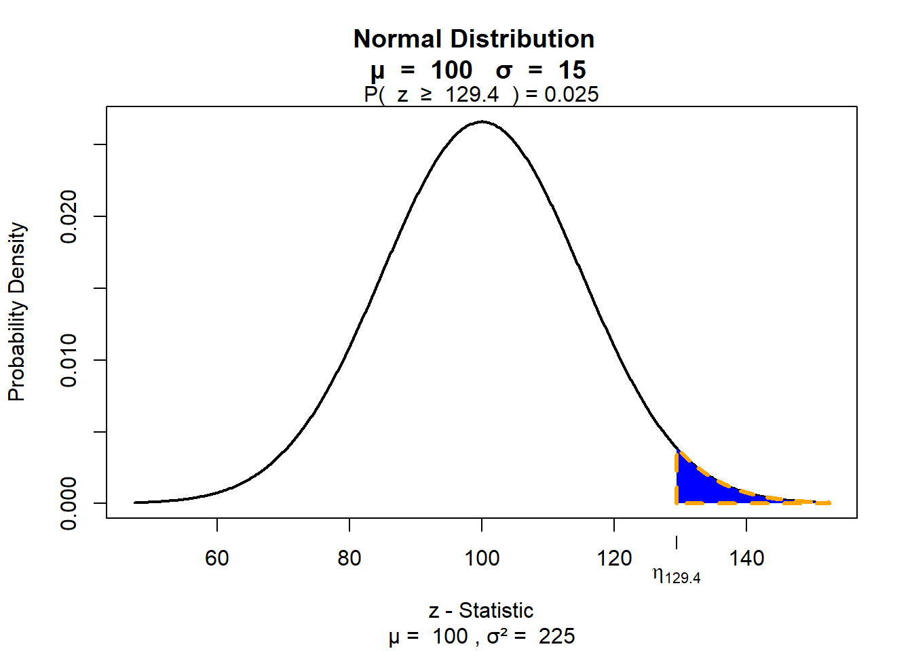
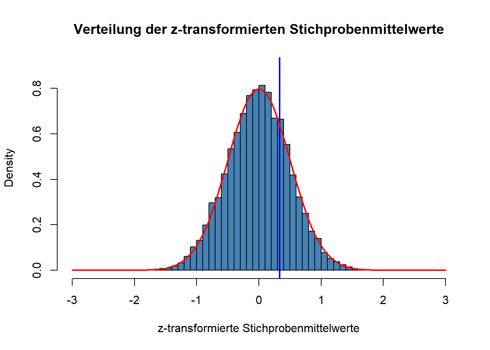
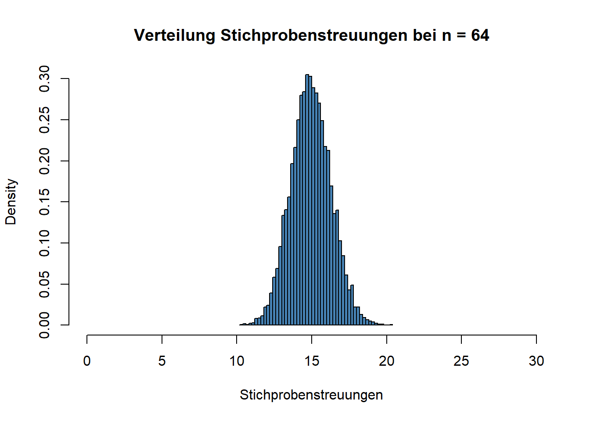
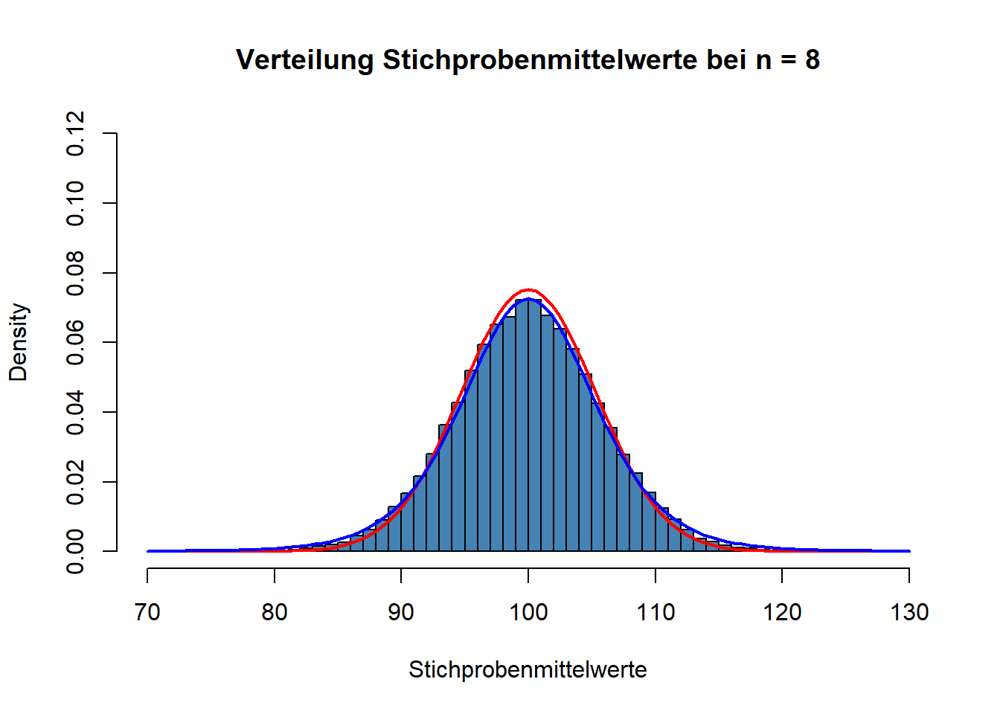
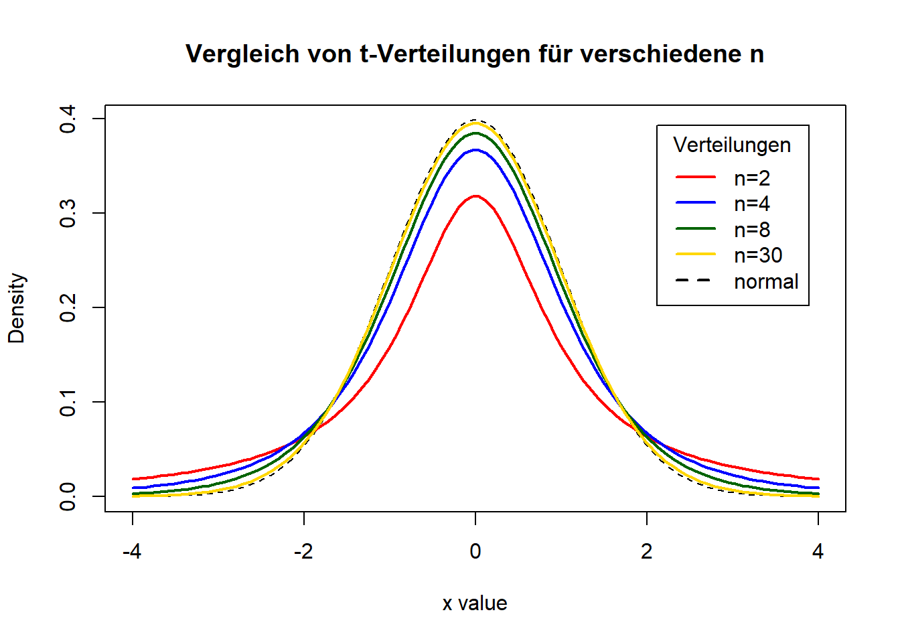

Sitzung 5: Inferenzstatistik – Mittelwerte, Standardfehler und Konfidenzintervall
Mit dem Wissen über Wahrscheinlichkeitsverteilungen, das Sie sich inzwischen angeeignet haben, können wir nun einen weiteren Schritt im Bereich der Inferenzstatistik (auch “schließende Statistik” genannt) machen.
Wie Sie in der Vorlesung mitbekommen haben, geht es in der Inferenzstatistik darum, von Befunden in Stichproben, gezogen aus einer Grundgesamtheit/ Population, auf Merkmale eben dieser Grundgesamtheit/ Population (zurück) zu schließen. Betrachten wir ein konkretes Szenario: PsychologInnen könnten sich bspw. die Frage stellen, ob laute Musik in der Umgebung einen negativen Einfluss auf die kognitive Leistungsfähigkeit hat. Zur Klärung dieser Frage ziehen sie eine zufällige Stichprobe von Menschen aus der Bevölkerung, setzen diese lauter Musik aus, und messen anschließend deren IQ mit Hilfe eines IQ-Tests. Zur Kontrolle gibt es eine weitere Zufallsstichprobe, deren IQ in stiller Umgebung erfasst wird.
Wie Sie schon wissen, ist Intelligenz (gemessen als IQ durch einen IQ-Test) ein in der Population normalverteiltes Merkmal, das den Mittelwert 100 IQ-Punkte und eine Streuung von 15 IQ-Punkten hat. Die IQ-Verteilung der Population sieht also so aus:

Die wichtigsten Merkmale der Normalverteilung kennen Sie schon: Sie wissen z.B., dass ca. 68 Prozent aller Werte im Bereich von plus/ minus einer Standardabweichung liegen. Anders ausgedrückt: ca. 68 Prozent aller Menschen haben einen IQ-Wert zwischen 85 und 115. Das ist unten anhand der blauen Fläche noch einmal dargestellt:

Sie wissen auch schon, dass ca. 95 Prozent aller Werte im Bereich von plus/ minus zwei Standardabweichungen liegen (genauer gesagt im Bereich von plus/ minus 1,96 Standardabweichungen):

95 Prozent aller Menschen haben also einen IQ-Wert, der zwischen 70 (genauer gesagt 70.6) und 130 (genauer gesagt 129.4) liegt. Das heißt auch, dass nur ca. 2,5 Prozent aller Menschen einen IQ-Wert haben, der größer als 130 ist (man spricht dann von Hochbegabung.):

Zurück zum Beispiel:
Wir beginnen unsere Überlegungen mit der oben genannten Kontrollgruppe von Versuchspersonen, deren IQ-Werte in stiller Umgebung erfasst werden. Wir nehmen an, dass Menschen in Stiller Umgebung nicht in ihrer kognitiven Leistungsfähigkeit beeinflusst sind (diese Annahme bezieht sich auf die Population). Entsprechend sollten wir aber auch erwarten, dass damit auch der IQ-Mittelwert der Kontrollgruppe bei 100 IQ-Punkten liegen sollte.
Im Rahmen der (fiktiven) Studie muss natürlich entschieden werden, wie viele Versuchspersonen für jede Versuchsgruppe (= Stichprobengröße) zufällig aus der Population gezogen werden. Wir werden sehen, dass die Stichprobengröße in der Inferenzstatistik eine ganz entscheidende Rolle spielt.
Wir nehmen zunächst an, dass (nur) vier Versuchspersonen pro Bedingung rekrutiert würden. Das nachfolgende Bild soll den Vorgang des zufälligen Ziehens aus der Population für die Kontrollgruppe illustrieren:

Wir ziehen zufällig vier Leute, messen dann den IQ jeder Person und bestimmen dann den IQ-Stichprobenmittelwert. In unserem Fall ergibt sich ein IQ-Stichprobenmittelwert von 88,75. In unserem Fall wissen wir nun schon, dass dieser Mittelwert \(M\) vom Mittelwert (\(\mu\)) der Population abweicht, weil wir ja in unserem fiktiven Beispiel den Populationsmittelwert kennen. In der “echten Welt” kennen wir den Populationsmittelwert natürlich nicht, sonst müsste man ja gar keine Statistik betreiben. Wir würden stattdessen den Stichprobenmittelwert als Schätzwert für den Populationsmittelwert verwenden.
1 Bestimmung der Schätzpräzision
Wie das Beispiel zeigt, ist diese Schätzung auf Basis der Stichprobe natürlich fehlerbehaftet. Wir haben einen Stichprobenmittelwert von 88,75 IQ-Punkten und nicht von 100 IQ-Punkten gemessen. Das Problem ist, dass man praktisch nie sicher wissen kann, wie sehr man mit der Stichprobenschätzung “daneben” liegt. Die gute Nachricht ist aber, dass man abschätzen kann, wie hoch die Messpräzision ist. Das ist das zentrale Element der Inferenzstatistik: Bei unseren auf Stichproben beruhenden Rückschlüssen auf die Population berücksichtigen wir die Unsicherheit der Messung.
Wie kann das gelingen? Stellen Sie sich vor, dass wir den oben beschriebenen Vorgang wiederholen. Wir ziehen also nochmals zufällig vier neue Personen aus der Population, messen ihre IQ-Werte und bestimmen dann wieder den Stichprobenmittelwert. Natürlich ist es sehr wahrscheinlich, dass wir bei diesem zweiten Durchgang andere IQ-Werte erhalten. Unten ist wieder eine Illustration zu sehen.

Dieses Mal messen wir einen Stichprobenmittelwert von 102.5. Würden wir den Vorgang erneut wiederholen, erhielten wir wieder einen etwas anderen Wert. Eine Möglichkeit, die Präzision einer Schätzung (in unserem Fall die Schätzung des Populationsmittelwerts auf Basis des Stichprobenmittelwerts) zu bestimmen, ist, die erwartete Variabilität der Stichprobenkennwerte (in unserem Fall sind das die IQ-Mittelwerte) bei theoretischer Wiederholung des Prozesses zu bestimmen.
Dazu benutzen wir wiederum die Stichprobenkennwertverteilung (Engl. “Sampling Distribution”), also in unserem Fall die zu erwartende Verteilung der Stichprobenmittelwerte. Für diese Stichprobenkennwertverteilung müssen wir dann die Streuung bestimmen. Glücklicherweise kann man die (zu erwartende) Streuung der Stichprobenmittelwerte bestimmen, ohne dass man den Populationsmittelwert kennt.
Stellen Sie sich vor, dass dieses zufällige Ziehen von Stichproben der Größe n = 4 ganz oft wiederholt wird. Bei jedem Durchgang werden die Stichprobenmittelwerte in einer Tabelle aufgelistet.

Nehmen Sie an, dass dieser Vorgang zehntausendmal wiederholt wird. Am Ende hätte man also eine Tabelle von zehntausend Stichprobenmittelwerten. Als nächstes stellen wir uns vor, dass wir die Verteilung dieser Stichprobenmittelwerte mit Hilfe eines Histogramms visualisieren. Das würde dann so aussehen, wie in der nachfolgenden Abbildung:

Wie Sie sehen können, sieht auch diese Verteilung der Stichprobenmittelwerte (wichtig: Das ist ein Histogramm über die Stichprobenmittelwerte, nicht die individuellen IQ-Werte) aus wie eine Normalverteilung. Die rote Kurve zeigt, dass die Stichprobenmittelwerte tatäschlich einer Normalverteilung entsprechen. Wir sehen auch: Wenn der Mittelwert der Populationswerte bei 100 liegt, dann wird auch der Mittelwert der Stichprobenmittelwerte bei 100 liegen. Es gilt also: Der Mittelwert der Stichprobenmittelwertsverteilung entspricht dem Populationsmittelwert des Merkmals (in unserem Fall IQ).
Wir können nun die Streuung dieser auf einer Simulation mit zehntausend Stichprobenmittelwerten basierenden Stichprobenmittelwertsverteilung bestimmen. Die Streuung ist:
sd(Stichprobenmittelwerte)## [1] 7.491133Tatsächlich kann man mathematisch beweisen, dass die Streuung der Stichprobenmittelwerte folgender Gleichung entspricht:
\(SE~= \sqrt{\frac{\sigma^2}{n}} = \frac{\sigma}{\sqrt{n}}\).
Die Streuung von Stichprobenmittelwerten entspricht der Populationsstreuung (\(\sigma\)) geteilt durch die Wurzel der Stichprobengröße. In unserem Fall wissen wir, dass die Populationsstreuung 15 IQ-Punkte beträgt und wir eine Stichprobengröße von n = 4 haben. Nutzen wir diese Werte und setzen sie in die Gleichung ein, so erhalten wir:
\(SE~= \frac{\sigma}{\sqrt{n}}~= \frac{15}{\sqrt{4}}~= 7.5\).
Also: bei Stichproben der Größe n = 4 und einem normalverteilten Merkmal mit einer Streuung von 15 Einheiten (IQ-Werte in unserem Fall) beträgt die Streuung der Stichprobenmittelwerte 7.5 Einheiten (IQ-Werte in unserem Fall). Übrigens: Die Streuung von Stichprobenmittelwerten nennt man Standardfehler (englisch “Standard Error”, abgekürzt \(SE\)).
Die Streuung von Stichprobenmittelwerten nennt man Standardfehler (“Standard Error”, \(SE\)) oder Standardschätzfehler. Der Standardfehler ist ein Maß dafür, wie sehr Stichprobenmittelwerte variieren würden, wenn man das zufällige Ziehen aus der Population unendlich oft wiederholen würde. Praktisch gibt das Maß an, wie präzise man einen Stichprobenmittelwert gemessen hat. Die Formel für \(SE\) ist:
\(SE~= \sqrt{\frac{\sigma^2}{n}} = \frac{\sigma}{\sqrt{n}}\).
Was nutzt uns dieses Wissen nun? Durch die Bestimmung des \(SE\) haben wir ein Maß, dass uns sagt, wie präzise wir mit unserem Stichprobenmittelwert bei einer Stichprobe der Größe \(n\) den Populationsparameter schätzen. Bezogen auf unser Beispiel: Wir können nun sagen, dass wir bei \(n = 4\) mit einer durchschnittlichen Abweichung vom IQ-Mittelwert der Population von 7.5 IQ-Punkten rechnen müssen. Ein gemessener Stichprobenmittelwert von 102,5 IQ-Punkten wäre bei \(n = 4\) also kein sehr außergewöhnliches Ergebnis, wenn der wahre Wert tatsächlich 100 IQ-Punkte beträgt.
2 Erhöhung der Schätzpräzision durch größere Stichproben
An der Formel für \(SE\) sehen Sie schon, warum die Stichprobengröße in der Inferenzstatistik ein ganz entscheidender Faktor ist. Was würde nämlich mit \(SE\) passieren, wenn \(n\) größer wird? Richtig, \(SE\) würde kleiner werden und die Messpräzision somit ansteigen. Unten sehen Sie die Verteilung der Mittelwerte für \(n = 16\).
Der Standardfehler beträgt in diesem Fall:
sd(Stichprobenmittelwerte)## [1] 3.749655Bei einer Verfierfachung der Stichprobengröße halbiert sich also der Standardfehler. Wiederholen wir das noch einmal, diesmal mit \(n = 64\).

Nun beträgt \(SE\):
sd(Stichprobenmittelwerte)## [1] 1.875423Also: Je größer \(n\) ist, umso weniger werden die Stichprobenmittelwerte streuen und umso eher kann man folglich erwarten, dass ein einzelner Stichprobenmittelwert \(M\) tatsächlich nah am Populationsmittelwert \(\mu\) liegen wird.
3 Angabe der Präzision durch ein Intervall
3.1 SE Intervall
Für die Schätzung eines Populationsmittelwerts basierend auf einem Stichprobenmittelwert kann man also den Standardfehler als Schätzfehler ansehen. Nehmen wir wieder die Ausgangssituation an, in der wir \(n = 4\) Leute der Kontrollgruppe zugeteilt hatten, die den IQ-Test in stiller Umgebung bearbeitet. Nehmen wir an, wir hätten einen IQ-Mittelwert von 102,5 IQ-Punkten in dieser Gruppe gemessen. Wir wissen, dass der \(SE\) bei einer Stichprobengröße von vier Versuchspersonen 7,5 IQ-Punkte beträgt. Wir können also sagen: Unsere Schätzung für den Populationsmittelwert beträgt 102,5 IQ-Punkte. Dies ist zunächst eine so genannte Punktschätzung. Wir können jetzt zusätzlich noch den IQ-Bereich angegeben, der einem Intervall von +/- \(SE\) entspricht: \(M - SE~= 102,5 - 7,5 = 95\) und \(M + SE = 102,5 + 7,5 = 110\). Also: plausible Schätzwerte im Bereich von +/- \(SE\) für den Populationsmittelwert liegen zwischen 95 und 110 IQ-Punkten.
Wie Sie schon wissen, ist die Verteilung der Stichprobenmittelwerte eine Normalverteilung, wenn das Merkmal (in unserem Fall IQ-Werte) in der Population normalverteilt ist. Sie wissen auch, dass es bei einer Normalverteilung so ist, dass ca. 68% der Werte im Bereich von +/- einer Standardabweichung liegen. Sie wissen auch, dass man die Standardabweichung der Stichprobenmittelwerte Standardfehler (\(SE\)) nennt. Damit wissen Sie nun auch, dass 68% aller Stichprobenmittelwerte im Bereich von +/- \(1\cdot SE\) liegen. Man kann deshalb sagen, dass die Wahrscheinlichkeit, dass das Intervall von +/- \(1\cdot SE\) um den Stichprobenmittelwert herum, den wahren Wert der Population mit einer Wahrscheinlichkeit von 68% beinhaltet bzw. einschließt. Wir könnten hier also auch von einem 68% Konfidenzintervall sprechen.
Übrigens, die Zahl mit der man \(SE\) multipliziert um ein Intervall zu konstruieren, dass den wahren (Populations-) Wert mit einer bestimmten Wahrscheinlichkeit einschließt, nennt man auch z-Wert. Z-Werte sind also nichts anderes als Standardfehlereinheiten.
3.2 95% Konfidenzintervall
Typischerweise gibt man als Intervall nicht ein 68% Konfidenzintervall an, sondern das 95% Konfidenzintervall. Sie wissen schon, mit welchem Wert man die Standardabweichung einer Normalverteilung multiplizieren muss, um ein Intervall zu konstruieren, innerhalb dessen 95% aller Werte liegen. Der Wert ist \(1.96\). Um für unsere Schätzung also ein 95 % Konfidenzintervall (abgekürzt 95% KI oder englisch 95% CI) zu erhalten, müssen wir also Folgendes rechnen:
\(KI_{Untergrenze} = M - 1,96\cdot SE~= 102,5 - 1,96 \cdot 7,5~= 87,8\) IQ-Punkte; und \(KI_{Obergrenze} = M + 1,96\cdot SE~= 102,5 - 1,96 \cdot 7,5~= 117,2\) IQ-Punkte.
Im Bereich von +/- \(1.96\) Standardabweichungen einer Normalverteilung liegen 95% aller Werte. Ein Konfidenzintervall um einen Stichprobenmittelwert \(M\) herum, welches den Populationsmittelwert \(\mu\) mit einer Wahrscheinlichkeit von 95% enthält, erhält man also, in dem man vom Stichprobenmittelwert zunächst 1,96-mal \(SE\) abzieht, und danach 1,96-mal \(SE\) addiert:
- \(KI_{Untergrenze} = M - 1,96\cdot SE\)
- \(KI_{Obergrenze} = M + 1,96\cdot SE\)
Zur Selbstkontrolle:
Wie wäre das 95% Konfidenzintervall, wenn der erhobene Stichprobenmittelwert von 102,5 IQ-Punkten nicht auf Basis von vier sondern 16 Versuchspersonen ermittelt worden wäre?
4 Standardisierung
Bisher haben wir in unseren Überlegungen immer die “Messeinheiten” des konkreten Beispiels benutzt. Unser Szenario bezieht sich auf IQ-Werte und wir haben deshalb bisher alles in IQ-Werten ausgedrückt. Weiter oben haben wir schon den Begriff “z-Werte” eingeführt und festgestellt, dass es sich dabei einfach um Standardfehlereinheiten handelt. Statt in IQ-Werten könnten wir unsere beispielhaften Befunde natürlich auch einfach in z-Werten ausdrücken. Wir behandeln das hier, da standardisierte Werte in der Statistik häufig benutzt werden.
Betrachten wir wieder das Ergebnis unserer Kontrollgruppe. Dort hatten wir einen IQ-Mittelwert von 102,5 gemessen. Wenn es stimmt, dass die IQ-Werte in der Population normalverteilt sind mit \(\mu~100\), dann können wir annehmen, dass dieser Stichprobenmittelwert von 102,5 IQ-Punkten aus einer Stichprobenmittelwertsverteilung stammt, die ebenfalls einen Mittelwert von 100 hat. Der Abstand zwischen Stichprobenmittelwert und Mittelwert der Stichprobenmittelwertsverteilung beträgt \(102,5 - 100~= 2,5\) IQ-Punkte. Diesen Abstand könnten natürlich auch in \(SE\)-Einheiten (sprich z-Werten) statt IQ-Einheiten angeben. Wir wissen, dass bei \(n~=4\) der \(SE\) 7,5 IQ-Punkte beträgt. Ein Abstand von 2,5 IQ-Punkten entspricht also \(\frac{2,5}{7,5}~= 0.33\) \(SE\), oder \(0.33\) \(z\).
Die allgemeine Formel zur Umrechnung von Werten in ihrer ursprünglichen Einheit in standardisierte z-Werte ist:
\(\frac{X - \mu}{\sigma}\).
In unserem Fall ist \(X\) der gemessene Stichprobenmittelwert, \(\mu\) der (vermutete) Mittelwert der Stichprobenmittelwertsverteilung und \(\sigma\) der Standardfehler (\(SE\)).
Noch einmal: würden wir die Stichprobenmittelwertsverteilung für \(n~= 4\) nicht wie weiter oben in IQ-Einheiten sondern in z-Einheiten ausdrücken, dann sähe diese so aus:

Die blaue senkrechte Linie, die die x-Achse bei \(0,33\) schneidet, markiert unsere Stichprobe mit IQ-Mittelwert von 102,5.
4.1 Warum Standardisierung?
Sie fragen sich jetzt vielleicht, wozu diese Standardisierung von Werten überhaupt gut sein soll. Was bringt uns das? Stellen Sie sich dazu vor, Sie würden den Befund der Kontrollgruppe jemandem mitteilen, der von IQ-Werten nichts weiß, außer dass dieses Merkmal in der Population normalverteilt ist. Die Person kennst sich außerdem mit den Eigenschaften der Normalverteilung aus. (Es könnte sich hier also z.B. um eine/n Forscher/in handeln, die sich mit Statistik aber nicht mit IQ-Werten auskennt.) Wenn Sie dieser Person sagen, dass Sie in einer Untersuchung einen IQ-Mittelwert von 102,5 Punkten gemessen haben, dann wird diese Person keine Ahnung haben, was das bedeutet. Ist das ein ungewöhnliches/ sehr unwahrscheinliches Ergebnis? Wenn Sie der Person stattdessen sagen, dass sie einen Stichprobenmittelwert gemessen haben, der 0,33 z beträgt, so wird die Person sofort erkennen, dass Ihr Messergebnis (also dieser gefundene Stichprobenmittelwert) alles andere als ein verblüffendes Ergebnis ist. Denn: z-Werte nah an 0 sind am wahrscheinlichsten und ein z-Wert von 0,33 ist sehr nah dran. Hätte die Untersuchung einen Stichprobenmittelwert von 115 IQ-Punkten ergeben, so entspräche das einem z-Wert von \(\frac{115 - 100}{7,5}~= 2\). Die Person wüsste in diesem Fall sofort, dass es sich hierbei um ein sehr ungewöhnliches/ unwahrscheinliches Ergebnis handeln würde; denn Werte die 2 Standardabweichungen (2 z) oder mehr über dem Mittelwert liegen, haben eine sehr geringe Wahrscheinlichkeit von nur ca. 2%.
5 Populationsstreuung unbekannt: von der Normalverteilung zur t-Verteilung
Wir haben uns vor Augen geführt, wie man im Rahmen der Inferenzstatistik die Schätzpräzision einer Stichproben-Messung mit Hilfe von Wissen über die Stichproben-Verteilung des Schätzwertes ermitteln kann (in unserem Fall ist der Stichprobenmittelwerts \(M\) der Schätzwert für den Populationsparameter \(\mu\)). Sie haben bereits gelernt, dass sich die Schätzpräzision gut durch ein Intervall angeben lässt. In der Regel gibt man das 95%-Konfidenzintervall an.
In unserem bisherigen Beispiel ging es um IQ-Mittelwerte. Das war kein Zufall. IQ-Mittelwerte eignen sich als Einstiegsbeispiel, weil bei IQ-Werten die Streuung der Werte in der Population bekannt ist (15 IQ-Punkte). Das haben wir uns oben in der Formel für den Standardfehler (\(SE\)) zunutze gemacht. Dort hatten wir nämlich die (bekannte) Populationsstreuung durch die Wurzel aus der Stichprobengröße geteilt, um \(SE\) zu ermitteln.
Das war allerdings eine Vereinfachung. In den allermeisten Fällen wird man die Streuung des Merkmals in der Population nämlich gar nicht kennen (genauso wenig wie den Populationsmittelwert). Denken Sie z.B. an das Trolley-Problem aus der zweiten Sitzung zurück. In der “Switch-Bedingung” des Experiments sollten Versuchspersonen angeben, wie “moralisch akzeptabel” es ist, einen Zug umzulenken, dadurch eine Person zu töten aber fünf Personen zu retten. Natürlich will man auch im Rahmen dieser Studie anhand des Mittelwerts der “Moral-Antworten” der Versuchspersonen (der Stichprobe) etwas über die “allgemeine” Sicht von Menschen in Bezug auf derartige moralische Dilemmata lernen. Wie Menschen (also die Population) solche Situationen im Mittel (das ist \(\mu\)) moralisch bewerten wissen wir nicht, deshalb machen wir ja das Experiment. Wir wissen aber genauso wenig, wie sehr sich Menschen in ihren Einschätzungen unterscheiden (das ist die Populationsstreuung \(\sigma\)). In der Regel kennt man also weder \(\mu\) noch \(\sigma\).
Welches Problem ergibt sich daraus? Offensichtlich können wir zur Bestimmung von \(SE\) in diesem Fall \(\sigma\) nicht in die Gleichung einsetzen. Was können wir stattdessen tun, um die Streuung von Stichprobenmittelwerten zu ermitteln, wenn \(\sigma\) unbekannt ist? Die Antwort: Statt \(\sigma\) setzen wir in die Formel die Streuung der Stichprobe \(s\) ein. Denn: Genau wie der Stichprobenmittelwert \(M\) der Schätzwert für den Populationsparameter \(\mu\) ist, so ist die Stichprobenstreuung \(s\) ein Schätzwert für die Populationsstreuung \(\sigma\). Hier ergibt sich aber ein Problem. Wir haben oben gesehen, dass man erwarten muss, dass sich Stichprobenmittelwerte bei wiederholtem Ziehen aus der Population voneinander unterscheiden. Unser Maß dafür war \(SE\), die Streuung der Stichprobenmittelwerte. Um \(SE\) zu bestimmen, wenn wir \(\sigma\) nicht kennen, benutzen wir stattdessen \(s\) als Schätzwert für \(\sigma\). Aber auch \(s\) wird ja \(\sigma\) nicht “perfekt” schätzen. Auch \(s\) wird bei wiederholter Stichprobenziehung immer etwas anders ausfallen. Unten sehen Sie ein Histogramm, dass die Verteilung von \(s\) (der Stichprobenstreuung) bei zehntausend Stichprobenziehungen mit \(n~= 4\) aus einer Normalverteilung (wir nehmen dazu wieder unsere IQ-Verteilung) zeigt.

Der Mittelwert dieser Verteilung (also der Mittelwert der Stichprobenstreuungen) entspricht der Populationsstreuung. Aber wie Sie sehen können “schwanken” auch die Stichprobenstreuungen um diesen wahren Wert (der ja in der Population 15 IQ-Punkte beträgt). Die Streuung der Stichprobenstreuungen ist in diesem Fall:
sd(Stichprobenstreuungen)## [1] 5.85299Natürlich würden wir auch hier die Schätzpräzision der Populationsstreuung erhöhen, wenn wir eine größere Stichprobe hätten. Hier die Verteilung für \(n = 64\).

5.1 Bedeutung für die Bestimmung von \(SE\)
Würden wir also bei der Bestimmung von \(SE\) (also der Streuung der Stichprobenmittelwerte) im Fall von unbekanntem \(\sigma\) einfach die Stichprobenstreuung \(s\) als Schätzwert für \(\sigma\) einsetzen, dann würden wir nicht berücksichtigen, dass auch die \(s\) als Schätzwert für \(\sigma\) mit Unsicherheit behaftet ist. Wir würden folglich \(SE\)-Werte und \(KI\)-Werte bestimmen, die diese Unsicherheit über den wahren Wert von \(\sigma\) nicht beinhalten. Anhand der beiden Stichprobenverteilungen für \(s\) sehen Sie auch, dass dieses Problem umso größer ist, je kleiner die Stichprobe (\(n\)) ist. Bei großen Stichproben wird \(s\) ja schließlich sehr nah an \(\sigma\) liegen.
Nun sind wir gewissermaßen in einem Dilemma. Wir kennen \(\sigma\) nicht und wissen, dass \(s\) ein fehlerbehafteter Schätzwert für \(\sigma\) ist. Etwas anderes/ besseres als \(s\) können wir aber zur Bestimmung von \(SE\) auch nicht nehmen. Wie können wir also zum Ausdruck bringen, dass die Bestimmung von \(SE\) (und natürlich jedem anderen Konfidenzintervall) unsicherer ist, je unsicherer wir \(\sigma\) anhand von \(s\) schätzen - also je kleiner die Stichprobengröße \(n\) ist.
5.2 Noch höhere Werte für SE bei kleinen Stichproben: die t-Verteilung
Die Idee ist, dass man systematisch größere Werte für \(SE\) bestimmt, je kleiner \(n\) ist. Größere Werte für \(SE\) drücken schließlich eine größere Unsicherheit der Schätzung des Populationsparameters durch die Stichprobe aus. Zu Beginn hatten wir bereits gesehen, dass \(SE\) auch bei bekanntem \(\sigma\) größer wird, je kleiner \(n\) ist. Diese Tendenz soll jetzt aber noch “extremer” sein, um eben bei unbekanntem \(\sigma\) zusätzlich die Unsicherheit zu berücksichtigen, die dadurch entsteht, dass \(\sigma\) durch ein fehlerbehaftetes \(s\) ersetzt worden ist.
Das Ergebnis dieser systematischen Integration von Unsicher über \(\sigma\) bei der Bestimmung von \(SE\) ist eine theoretische Verteilung, die man t-Verteilung (oder auch “Studentische t-Verteilung”) nennt. (Übrigens: Wenn Sie wissen wollen, warum die t-Verteilung auch “Studentische t-Verteilung” genannt wird und was diese Verteilung eigentlich mit irischem Bier zu tun hat, dann schauen Sie hier.)
Wie diese Verteilung bei einer Stichprobengröße von \(n = 4\) aussieht, sehen Sie unten:

Die blaue Kurve zeigt die t-Verteilung bei \(n = 4\). Die rote Kurve zeigt zum Vergleich wieder die Normalverteilung für \(SE~= 7,5\). Wie Sie sehen können, ist die t-Verteilung in der Mitte schmaler aber an den Rändern breiter als die Normalverteilung. Das führt dazu, dass auch die Streuung der t-Verteilung (für kleine \(n\)) größer ist als die der Normalverteilung. Für die oben dargestellte t-Verteilung ist die Streuung:
sd(Stichprobenmittelwerte, na.rm=TRUE)## [1] 8.817848Oben hatten wir erwähnt, dass die Unsicherheit durch die Verwendung von \(s\) als Schätzer für \(\sigma\) abnehmen sollte, je größer \(n\) wird. Die t-Verteilung hat tatsächlich die Eigenschaft, diese abnehmende Unsicherheit bezüglich \(\sigma\) abzubilden. Hier die t-Verteilung bei \(n~= 8\).
5.3 Bestimmung von Konfidenzintervallen mit der t-Verteilung

Und hier noch einmal für \(n~= 64\).

Wie Sie sehen können, geht die t-Verteilung bei steigendem \(n\) immer mehr in eine Normalverteilung über. In der Abbildung oben ist die blaue Kurve der t-Verteilung von der roten Kurve der Normalverteilung schon gar nicht mehr zu unterscheiden.
In der nachfolgenden Abbildung sehen Sie eine Zusammenfassung, die zeigt, wie die t-Verteilung mit steigendem \(n\) in die Normalverteilung übergeht. Anders als die Abbildungen oben sind die Werte in der unteren Abbildung wieder standardisiert (sodass der Mittelwert der Verteilungen bei 0 liegt). Die schwarze gestrichelte Linie entspricht einer Normalverteilung.
# Display the Student's t distributions with various
# degrees of freedom and compare to the normal distribution
x <- seq(-4, 4, length=100)
hx <- dnorm(x)
degf <- c(1, 3, 7, 29)
colors <- c("red", "blue", "darkgreen", "gold", "black")
labels <- c("n=2", "n=4", "n=8", "n=30", "normal")
plot(x, hx, type="l", lty=2, xlab="x value",
ylab="Density", main="Comparison of t Distributions")
for (i in 1:4){
lines(x, dt(x,degf[i]), lwd=2, col=colors[i])
}
legend("topright", inset=.05, title="Distributions",
labels, lwd=2, lty=c(1, 1, 1, 1, 2), col=colors)
6 Übung in Excel
6.1 Szenario
6.2 Vorgehen
7 Zusätzliche Illustrationen
7.1 Simulation Sampling Distribution
7.2 Simulation für Konfidenzintervalle
8 Fragen zur Selbstkontrolle
Copyright © 2020 Simon Stephan. All rights reserved.